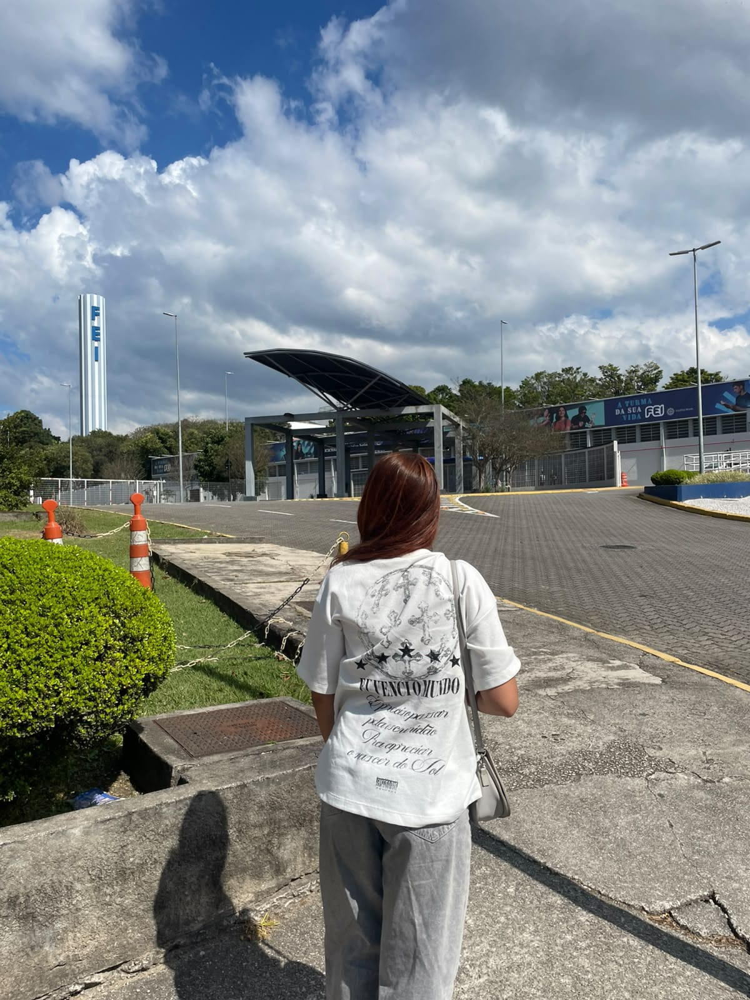
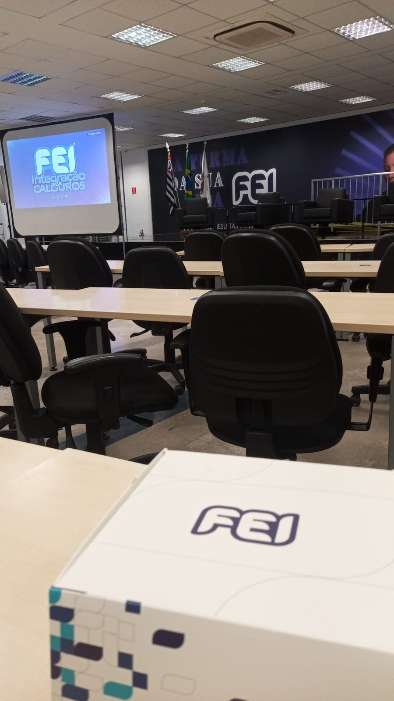
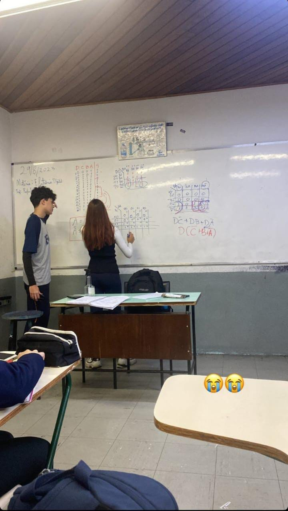
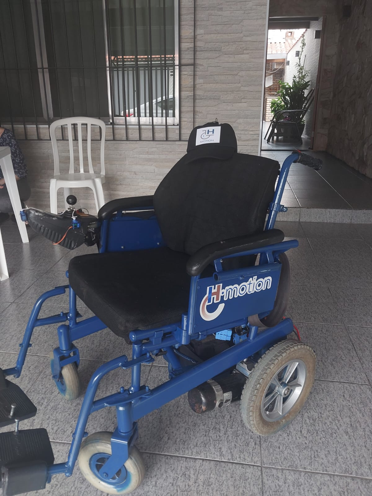
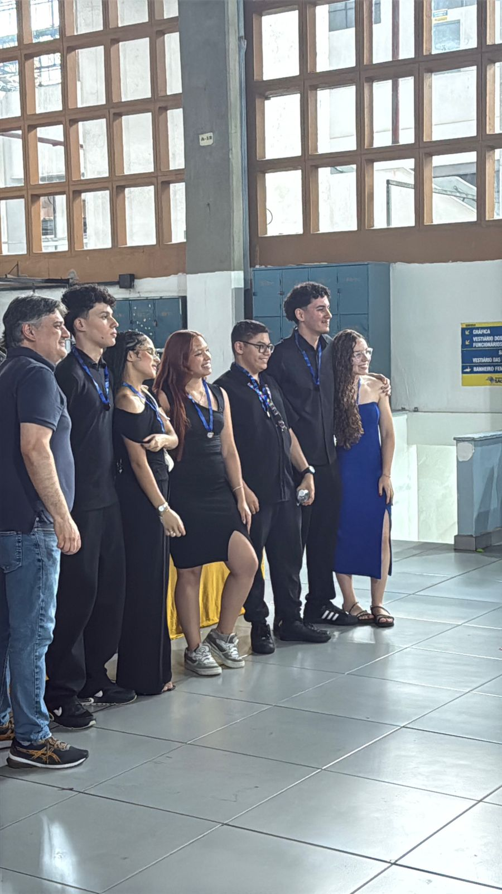

Olá!
Eu sou uma estudante da aréa de ciência da computação, no 1º periódo da faculdade, na instituição Fundação Educacional Inaciana "Pe. Sabóia de Medeiros" (FEI).
Antes de escolher ingressar na FEI, estudei na Escola Técnica Estadual Jorge Street, cursando o tecnológo de Automação Industrial integrado com o ensino médio. Na conclusão do meu tecnológo pude ter experiências desafiadoras para a realização do Trabalho de Conclusão de Curso (TCC), porém, nada explica a realização que senti ao observar o projeto funcionando. O H-Motion, foi um projeto de uma cadeira de rodas motorizada que se moveria ao analisar para que lado a cabeça do usuário indicasse, através de um sensor, caso tenha interesse em assistir um video que mostra um pouco do projeto clique aqui.





